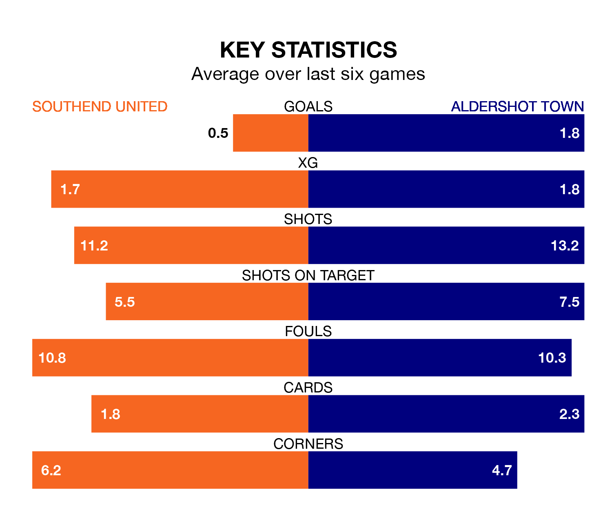

Aldershot Town face a challenge to maintain their high-scoring form away against a tight Southend United defence on Saturday.
With 59 goals in 34 games, Aldershot are the joint-fourth-highest scorers in the National League ahead of the 3pm kick-off at Roots Hall.
They face a Shrimpers side who have scored 46 in 32 matches, but conceded only 34 goals, putting them top of the league's tightest defences.
Aldershot are fifth in the table after 34 games, of which they have won 16 and drawn six, earning 54 points.
Southend are five places behind Town in 10th, with 14 wins and six draws putting them on 48 points.
United are in mixed form in the National League, with two wins and a draw from their last six games.
With four wins and a draw over that period, the Shots' form is much better – they have taken 13 points from 18, compared to the Shrimpers' seven.
In the last five years, Southend and Aldershot have played each other on five occasions. Aldershot won three of them and they drew twice.
On average, the Shrimpers scored 1.0 goal and the Shots 1.8 in those matches.
Their last meeting was on September 26, when they played out a 1-1 draw.
Southend's last match was on Tuesday, a 2-1 win against Maidenhead United, with Adam Crowther and Danny Waldron getting the goals for the Shrimpers.
Aldershot beat Barnet 1-0 last time out, also on Tuesday, with Kwame Thomas on the scoresheet.
Updated: 10:08 (UTC), 23/02/24